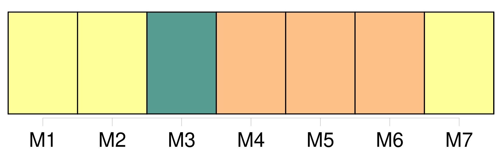
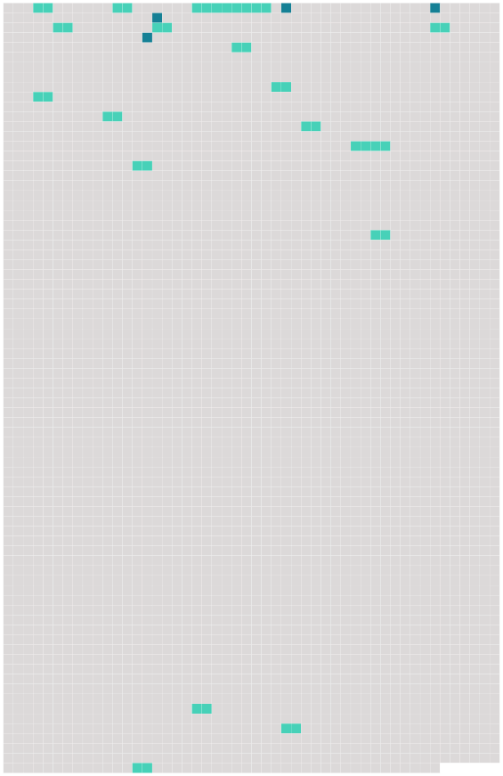

Longueur nb maillons : 21 mentions |
  |
De la Tutelle [des Père] et Mère. [1 phrases]
[Le père] est, durant le mariage, [administrateur des biens personnels de ses enfans mineurs]
[Il] est comptable, quant à la propriété et aux revenus, des biens dont [il] n'a pas la jouissance ; et, quant à la propriété seulement, de ceux des biens dont la loi [lui] donne l'usufruit. [1 phrases]
Après la dissolution du mariage arrivée par la mort naturelle ou civile de l'un des époux, la tutelle des enfans mineurs et non émancipés appartient de plein droit au survivant [des père] et mère. [1 phrases]
Pourra néanmoins [le père] nommer à la mère survivante et tutrice un conseil spécial sans l'avis duquel elle ne pourra faire aucun acte relatif à la tutelle.
Si [le père] spécifie les actes pour lesquels le conseil sera nommé, la tutrice sera habile à faire les autres sans [son] assistance. [5 phrases]
Si, lors du décès [du mari] , la femme est enceinte, il sera nommé un curateur au ventre par le conseil de famille. [8 phrases]
De la Tutelle déférée par [le Père] ou la Mère.
397 [6 phrases]
Le tuteur élu par [le père] ou la mère, n'est pas tenu d'accepter la tutelle, s'il n'est d'ailleurs dans la classe des personnes qu'à défaut de cette élection spéciale le conseil de famille eût pu en charger. [3 phrases]
Lorsqu'il n'a pas été choisi au mineur un tuteur par le dernier mourant de [ses père] et mère, la tutelle appartient de droit à son aïeul paternel ; à défaut de celui -ci, à son aïeul maternel, et ainsi en remontant, de manière que l'ascendant paternel soit toujours préféré à l'ascendant maternel du même degré. [1 phrases]
Si, à défaut de l'aïeul paternel et de l'aïeul maternel du mineur, la concurrence se trouvait établie entre deux ascendans du degré supérieur qui appartinssent tous deux à la ligne paternelle du mineur, la tutelle passera de droit à celui des deux qui se trouvera être l'aïeul paternel [du père du mineur] [5 phrases]
Lorsqu'un enfant mineur et non émancipé restera sans père ni mère, ni tuteur élu par [ses père] ou mère, ni ascendans mâles, comme aussi lorsque le tuteur de l'une des qualités ci-dessus exprimées se trouvera ou dans le cas des exclusions dont il sera parlé ci-après, ou valablement excusé, il sera pourvu, par un conseil de famille à la nomination d'un tuteur. [11 phrases]
Lorsque les parens ou alliés de l'une ou de l'autre ligne se trouveront en nombre insuffisant sur les lieux, ou dans la distance désignée par l'article 407, le juge de paix appellera, soit des parens ou alliés domiciliés à de plus grandes distances, soit, dans la commune même, des citoyens connus pour avoir eu des relations habituelles d'amitié avec [le père] ou la mère du mineur. [124 phrases]
[Les père] et mère, tant qu'ils ont la jouissance propre et légale des biens du mineur, sont dispensés de vendre les meubles, s'ils préfèrent de les garder pour les remettre en nature. [3 phrases]
Lors de l'entrée en exercice de toute tutelle, autre que celle [des père] et mère le conseil de famille réglera par aperçu, et selon l'importance des biens régis, la somme à laquelle pourra s'élever la dépense annuelle du mineur, ainsi que celle d'administration de ses biens. [6 phrases] Le tuteur, même [le père] ou la mère, ne peut emprunter pour le mineur, ni aliéner ou hypothéquer ses biens immeubles, sans y être autorisé par un conseil de famille. |
 |
La ressource peut être téléchargée sur la page Ortolang
Si vous avez des questions ou vous voyez des erreurs, merci d'envoyer un mail à silvia.federzoni89@gmail.com
Site développé par S. Federzoni (contact)